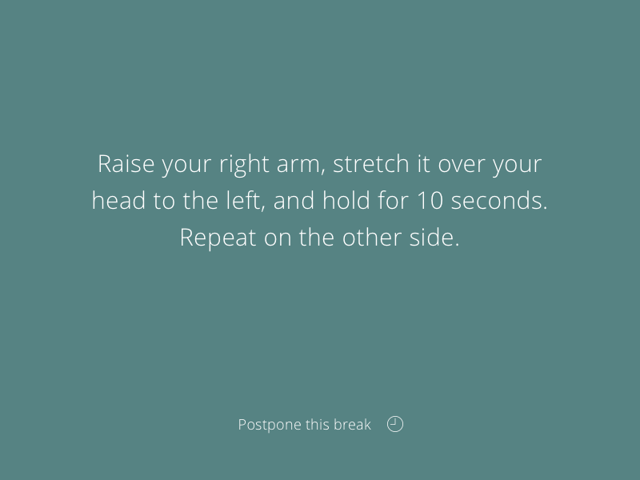

Change the color of SVG image via CSS
Posted under css svg onWhile working on new version of stretchly, I've run into an interesting problem. Here's a design I need to to:

Here's SVG for icon:

As you can guess, the icon is black when added to the HTML. What I need, though, is white one an yellow-ish on hover. Creating another set of icons for different colors seemed overthinking…
As the SVG file is rather simple, I was expecting that there should be a simple solution how to change a color of SVG via CSS. And there is.
All you need to do is to target your image with following:
img {
filter: invert(100%) sepia(100%) saturate(0%) hue-rotate(288deg) brightness(102%) contrast(102%);
}
The value of filter is the color you want, based on CSS filter generator to convert from black to target hex color.
Neat.
Did you enjoy this? Copy-paste the link from the address bar to your favourite social network to share. Subscribe here.
comments powered by Disqus